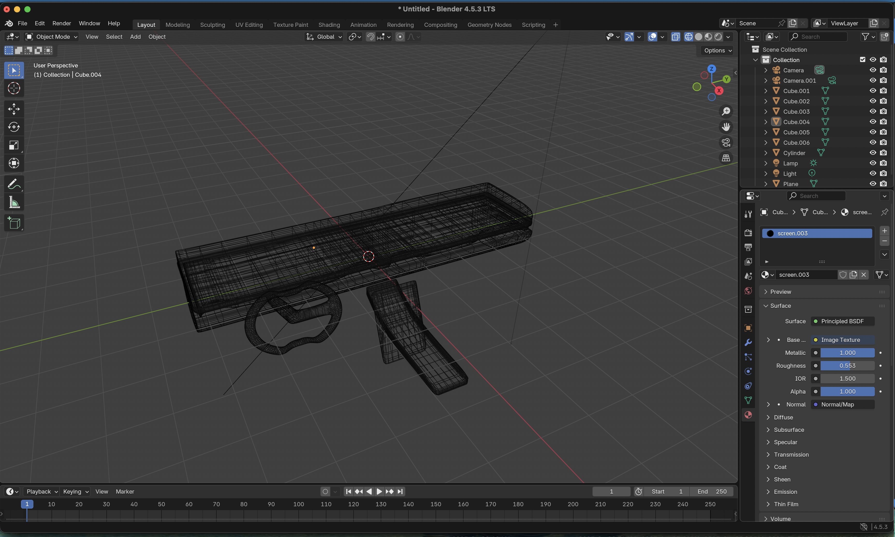
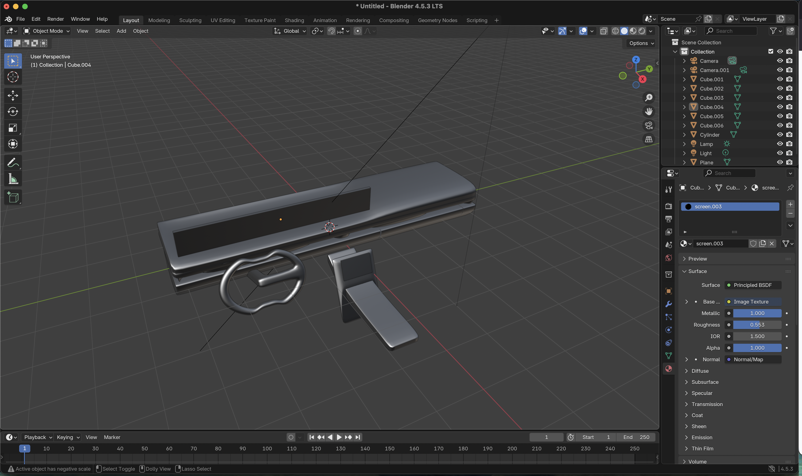
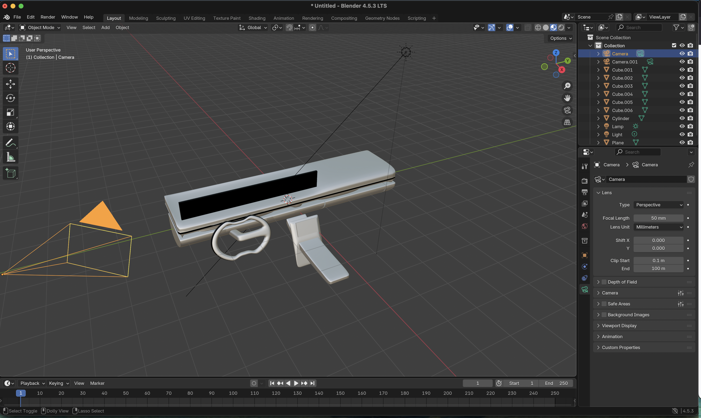
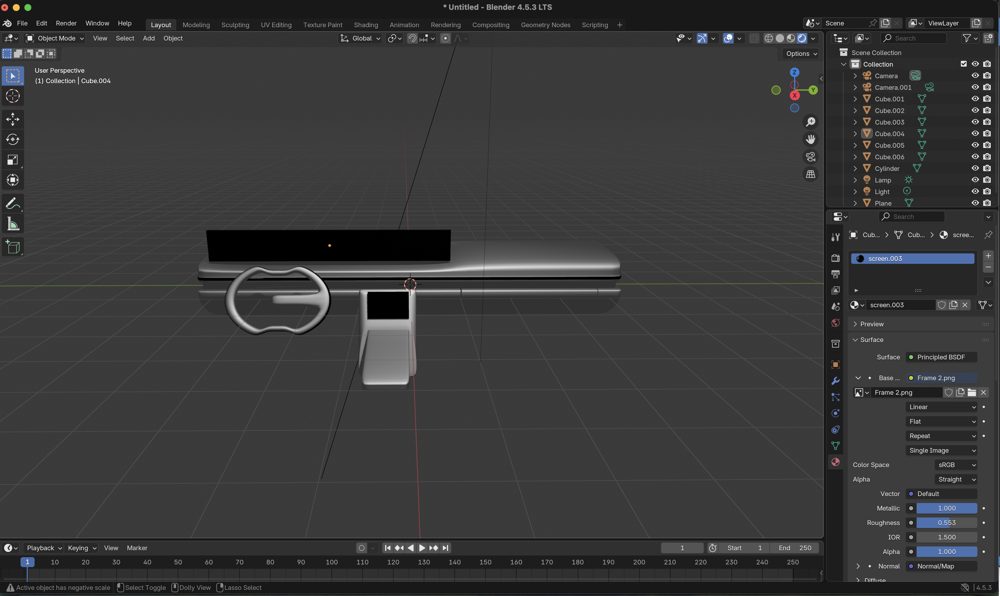

Car Dashboard 3D Prototype
This project explores the intersection between interface design and 3D visualization, transforming a 2D navigation app into an immersive in-car experience. Modeled and rendered in Blender, this prototype reimagines how drivers could interact with real-time maps, route data, and environmental awareness in a visually balanced, safety-focused dashboard. The goal was to design a functional, intuitive, and aesthetic 3D interface that enhances driver usability while integrating seamlessly with car interiors.
Modeling and Design Process
The Waze Dashboard model was created in Blender using simple geometric forms refined with modifiers to achieve a clean, realistic car-interior aesthetic. I began by setting up the scene, adjusting the camera and lighting for accurate proportions, and modeling the dashboard from a scaled cube. The edges were smoothed with Subdivision and Bevel modifiers, while a recessed cavity was added to host the navigation display. A glossy black plane simulated the glass screen, complemented by a metallic gray dashboard body.
The steering wheel was formed using a torus and extruded handle, positioned at driver level, and a center console was added from extruded cubes to balance the layout. Materials were applied to differentiate surfaces—metallic, matte, and reflective— and the scene was illuminated with a three-point light setup and HDRI reflections. The final composition was rendered in Cycles, with the central screen prepared for a Waze interface overlay and animation, showcasing the concept of a dynamic, user-centric navigation dashboard.
Process Screenshots & Final Renders
Below are the screenshots and renders showing the step-by-step development of the Waze Dashboard app 3D prototype: from base modeling and lighting setup to the final render. Each stage captures the progressive refinement of shapes, materials, and interface layout.
With its clean, futuristic aesthetic, this dashboard redefines the driving experience, offering a more comfortable, distraction-free interface by replacing the complexity of traditional knobs and buttons with a simplified, digital approach.

Base dashboard: modeling rough geometry and layout setup

Viewport preview showing material application and lighting adjustments

Lighting and camera positioning to achieve realistic depth and reflections

Final render: front dashboard perspective with realistic shading
Rendering of the final result
The screen recording below showcases the step-by-step 3D modeling process of the Car Dashboard prototype in Blender — from the initial mesh setup and material adjustments to the final rendered composition.
Tutorials, 3D Models & Additional Resources
The following resources supported the modeling, rendering, and concept development of this project. They include tutorials, reference materials, and third-party 3D assets that guided the design process.